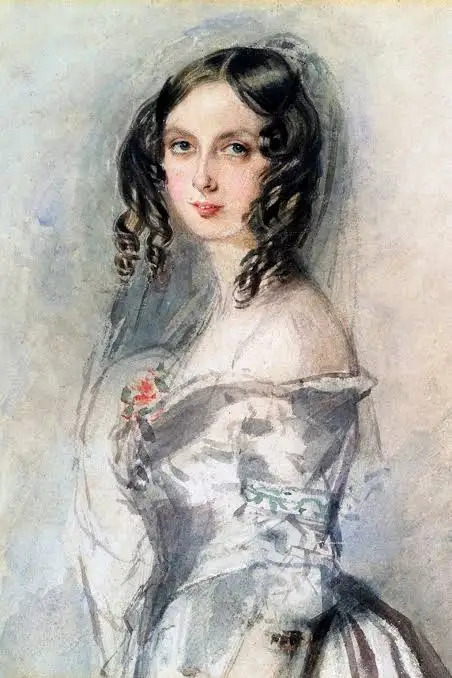
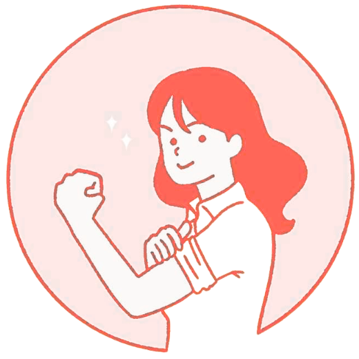
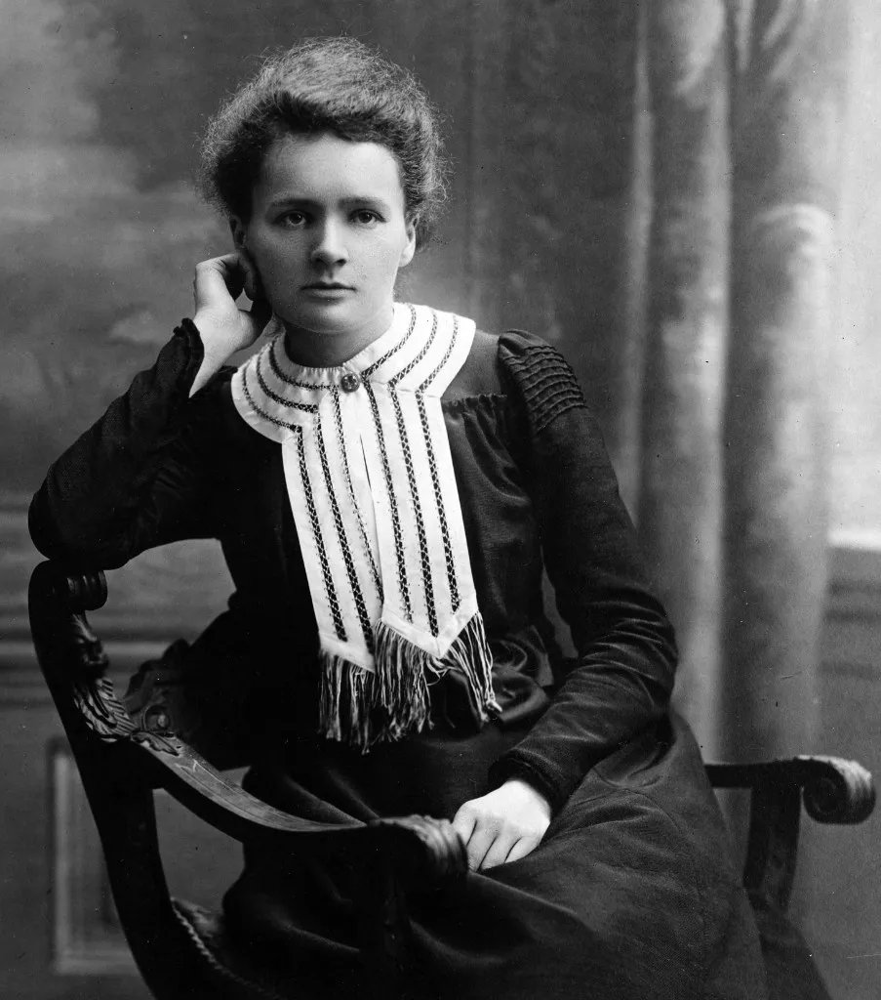

Ada Lovelace
Tecnología
Ciencia

Pioneras
Muchas mujeres enfrentan discriminación y menos oportunidades en áreas STEM, trabajos físicos o sectores mejor remunerados. Sus historias rara vez reciben la visibilidad que merecen.
Pioneras es una galería de divulgación sobre mujeres líderes en ciencia, deporte, arte y trabajo, combinando pioneras históricas con referentes de hoy.
Frase del día
La imaginación es la facultad del descubrimiento

Tecnología
Ciencia

Ciencia